同 CPU、内存以及 I/O 一样，网络也是 Linux 系统最核心的功能。网络是一种把不同计算机或网络设备连接到一起的技术，它本质上是一种进程间通信方式，特别是跨系统的进程间通信，必须要通过网络才能进行。随着高并发、分布式、云计算、微服务等技术的普及，网络的性能也变得越来越重要。
网络模型
谈起网络模型，大家肯定都知道 OSI 七层模型以及 TCP/IP 网络模型，其中七层模型分别为：
- 应用层，负责为应用程序提供统一的接口。
- 表示层，负责把数据转换成兼容接收系统的格式。
- 会话层，负责维护计算机之间的通信连接。
- 传输层，负责为数据加上传输表头，形成数据包。
- 网络层，负责数据的路由和转发。
- 数据链路层，负责 MAC 寻址、错误侦测和改错。
- 物理层，负责在物理网络中传输数据帧。
但是由于其模型复杂，建议虽好，但是没人实现，所以在 Linux 中经常用到的是 TCP/IP 四层模型：
- 应用层，负责向用户提供一组应用程序，比如 HTTP、FTP、DNS 等。
- 传输层，负责端到端的通信，比如 TCP、UDP 等。
- 网络层，负责网络包的封装、寻址和路由，比如 IP、ICMP 等。
- 网络接口层，负责网络包在物理网络中的传输，比如 MAC 寻址、错误侦测以及通过网卡传输网络帧等。
TCP/IP 四层模型和 OSI 模型之间并不是孤立的，是存在对应关系的：
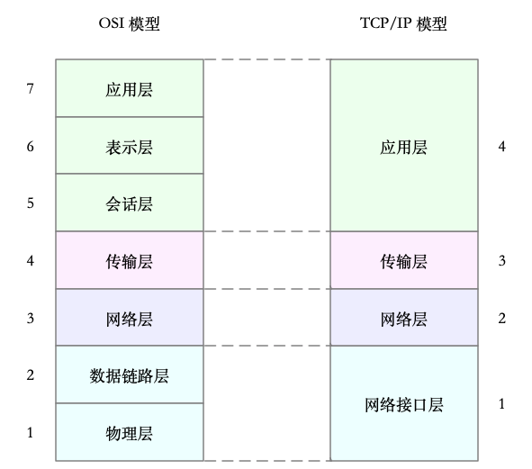
Linux 网络栈
有了 TCP/IP 模型后，在进行网络传输时，数据包就会按照协议栈，对上一层发来的数据进行逐层处理；然后封装上该层的协议头，再发送给下一层。
当然，网络包在每一层的处理逻辑，都取决于各层采用的网络协议。比如在应用层，一个提供 REST API 的应用，可以使用 HTTP 协议，把它需要传输的 JSON 数据封装到 HTTP 协议中，然后向下传递给 TCP 层。
而封装做的事情就很简单了，只是在原来的负载前后，增加固定格式的元数据，原始的负载数据并不会被修改。比如，以通过 TCP 协议通信的网络包为例，通过下面这张图，我们可以看到，应用程序数据在每个层的封装格式。
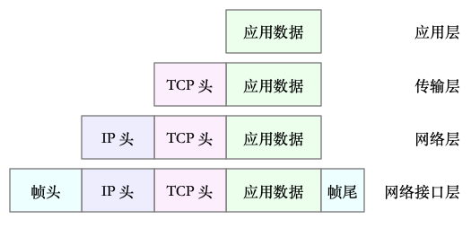
其中：
- 传输层在应用程序数据前面增加了 TCP 头；
- 网络层在 TCP 数据包前增加了 IP 头；
- 而网络接口层，又在 IP 数据包前后分别增加了帧头和帧尾。
这些新增的头部和尾部，都按照特定的协议格式填充，其中增加了网络包的大小，但我们都知道，物理链路中并不能传输任意大小的数据包。网络接口配置的最大传输单元（MTU），就规定了最大的 IP 包大小。在我们最常用的以太网中，MTU 默认值是 1500（这也是 Linux 的默认值）。
一旦网络包超过 MTU 的大小，就会在网络层分片，以保证分片后的 IP 包不大于 MTU 值。显然，MTU 越大，需要的分包也就越少，自然，网络吞吐能力就越好。
理解了 TCP/IP 网络模型和网络包的封装原理后，很容易能想到，Linux 内核中的网络栈，其实也类似于 TCP/IP 的四层结构。如下图所示，就是 Linux 通用 IP 网络栈的示意图：
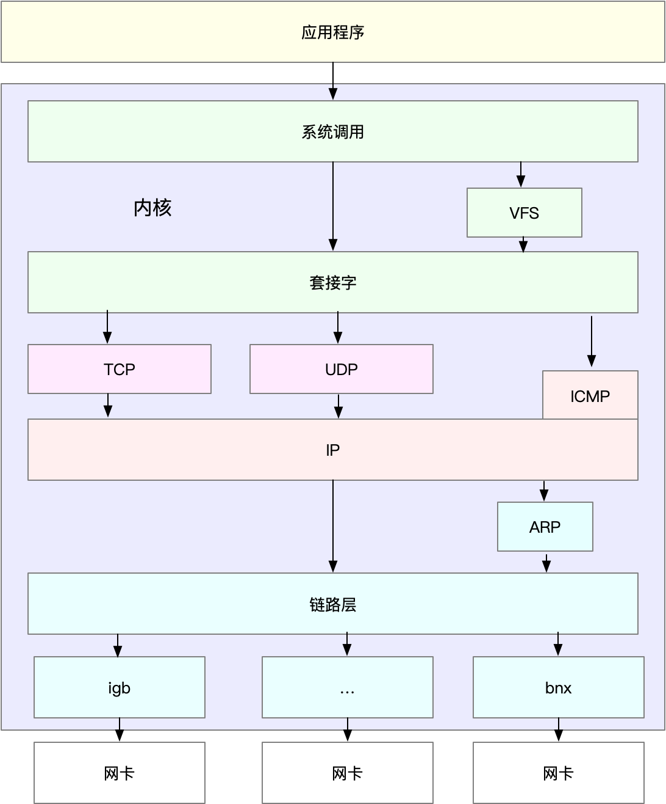
我们从上到下来看这个网络栈，可以发现，
- 最上层的应用程序，需要通过系统调用，来跟套接字接口进行交互；
- 套接字的下面，就是我们前面提到的传输层、网络层和网络接口层；
- 最底层，则是网卡驱动程序以及物理网卡设备。
网卡是发送和接收网络包的基本设备。在系统启动过程中，网卡通过内核中的网卡驱动程序注册到系统中。而在网络收发过程中，内核通过中断跟网卡进行交互。网卡硬中断只处理最核心的网卡数据读取或发送，而协议栈中的大部分逻辑，都会放到软中断中处理，因为网络包的处理非常复杂。
网络收包流程
当一个网络帧到达网卡后，网卡会通过 DMA 方式，把这个网络包放到收包队列中；然后通过硬中断，告诉中断处理程序已经收到了网络包。
接着，网卡中断处理程序会为网络帧分配内核数据结构（sk_buff），并将其拷贝到 sk_buff 缓冲区中；然后再通过软中断，通知内核收到了新的网络帧。
接下来，内核协议栈从缓冲区中取出网络帧，并通过网络协议栈，从下到上逐层处理这个网络帧。比如：
在链路层检查报文的合法性，找出上层协议的类型（比如 IPv4 还是 IPv6），再去掉帧头、帧尾，然后交给网络层。
网络层取出 IP 头，判断网络包下一步的走向，比如是交给上层处理还是转发。当网络层确认这个包是要发送到本机后，就会取出上层协议的类型（比如 TCP 还是 UDP），去掉 IP 头，再交给传输层处理。
传输层取出 TCP 头或者 UDP 头后，根据 < 源 IP、源端口、目的 IP、目的端口 > 四元组作为标识，找出对应的 Socket，并把数据拷贝到 Socket 的接收缓存中。
最后，应用程序就可以使用 Socket 接口，读取到新接收到的数据了。
如下图，左半部分表示接收流程，右半部分表示发包流程，粉色箭头表示处理路径：
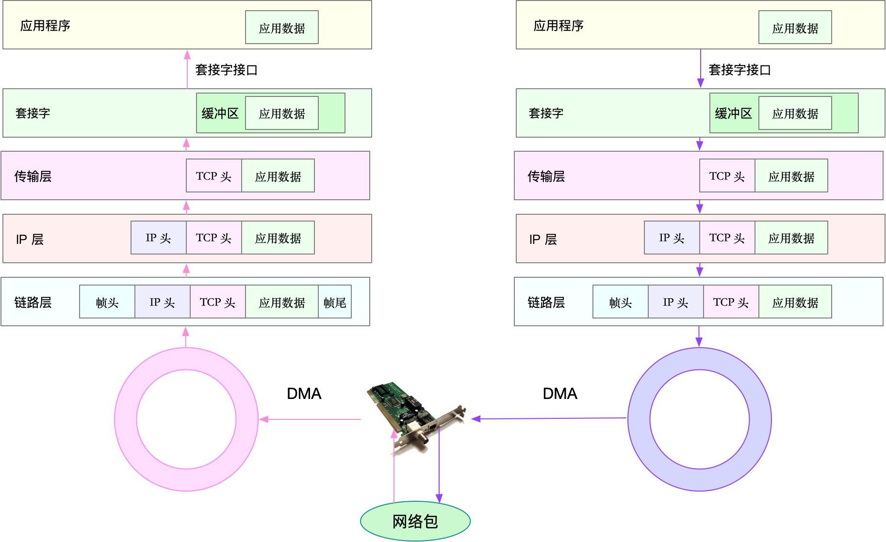
网络发包流程
网络包的发送流程就是上图的右半部分，很容易发现，网络包的发送方向，正好跟接收方向相反。
首先，应用程序调用 Socket API（比如 sendmsg）发送网络包。由于这是一个系统调用，所以会陷入到内核态的套接字层中。套接字层会把数据包放到 Socket 发送缓冲区中。
接下来，网络协议栈从 Socket 发送缓冲区中，取出数据包；再按照 TCP/IP 栈，从上到下逐层处理。比如，传输层和网络层，分别为其增加 TCP 头和 IP 头，执行路由查找确认下一跳的 IP，并按照 MTU 大小进行分片。
分片后的网络包，再送到网络接口层，进行物理地址寻址，以找到下一跳的 MAC 地址。然后添加帧头和帧尾，放到发包队列中。这一切完成后，会有软中断通知驱动程序：发包队列中有新的网络帧需要发送。
最后，驱动程序通过 DMA ，从发包队列中读出网络帧，并通过物理网卡把它发送出去。
网络性能指标
我们通常用带宽、吞吐量、延时、PPS（Packet Per Second）等指标衡量网络的性能。
- 带宽，表示链路的最大传输速率，单位通常为 b/s （比特 / 秒）。
- 吞吐量，表示单位时间内成功传输的数据量，单位通常为 b/s（比特 / 秒）或者 B/s（字节 / 秒）。吞吐量受带宽限制，而吞吐量 / 带宽，也就是该网络的使用率。
- 延时，表示从网络请求发出后，一直到收到远端响应，所需要的时间延迟。在不同场景中，这一指标可能会有不同含义。比如，它可以表示，建立连接需要的时间（比如 TCP 握手延时），或一个数据包往返所需的时间（比如 RTT）。PPS，是 Packet Per Second（包 / 秒）的缩写，表示以网络包为单位的传输速率。
- PPS 通常用来评估网络的转发能力，比如硬件交换机，通常可以达到线性转发（即 PPS 可以达到或者接近理论最大值）。而基于 Linux 服务器的转发，则容易受网络包大小的影响。
除了这些指标，网络的可用性（网络能否正常通信）、并发连接数（TCP 连接数量）、丢包率（丢包百分比）、重传率（重新传输的网络包比例）等也是常用的性能指标。
网络配置查看
分析网络问题的第一步，通常是查看网络接口的配置和状态。可以使用 ifconfig 或者 ip 命令，来查看网络的配置。
ifconfig 和 ip 分别属于软件包 net-tools 和 iproute2，iproute2 是 net-tools 的下一代。通常情况下它们会在发行版中默认安装。但如果你找不到 ifconfig 或者 ip 命令，可以安装这两个软件包。
ifconfig 示例：
root@iZ94lcu45k0Z:~# ifconfig eth0
eth0: flags=4163<UP,BROADCAST,RUNNING,MULTICAST> mtu 1500
inet 172.18.142.1 netmask 255.255.240.0 broadcast 172.18.143.255
ether 00:16:3e:02:c0:3c txqueuelen 1000 (Ethernet)
RX packets 20372388 bytes 2446988456 (2.4 GB)
RX errors 0 dropped 0 overruns 0 frame 0
TX packets 23773340 bytes 7281209455 (7.2 GB)
TX errors 0 dropped 0 overruns 0 carrier 0 collisions 0
root@iZ94lcu45k0Z:~#
ip 命令示例：
root@iZ94lcu45k0Z:~# ip -s addr show dev eth0
2: eth0: <BROADCAST,MULTICAST,UP,LOWER_UP> mtu 1500 qdisc fq_codel state UP group default qlen 1000
link/ether 00:16:3e:02:c0:3c brd ff:ff:ff:ff:ff:ff
inet 172.18.142.1/20 brd 172.18.143.255 scope global dynamic eth0
valid_lft 302392834sec preferred_lft 302392834sec
RX: bytes packets errors dropped overrun mcast
2447069436 20373350 0 0 0 0
TX: bytes packets errors dropped carrier collsns
7281352242 23773865 0 0 0 0
root@iZ94lcu45k0Z:~#
ifconfig 和 ip 命令输出的指标基本相同，只是显示格式略微不同。比如，它们都包括了网络接口的状态标志、MTU 大小、IP、子网、MAC 地址以及网络包收发的统计信息。其中：
网络接口的状态标志。
ifconfig输出中的 RUNNING ，或ip输出中的 LOWER_UP ，都表示物理网络是连通的，即网卡已经连接到了交换机或者路由器中。如果你看不到它们，通常表示网线被拔掉了。MTU 的大小。MTU 默认大小是 1500，根据网络架构的不同（比如是否使用了 VXLAN 等叠加网络），你可能需要调大或者调小 MTU 的数值。
网络接口的 IP 地址、子网以及 MAC 地址。这些都是保障网络功能正常工作所必需的，需要确保配置正确。
网络收发的字节数、包数、错误数以及丢包情况，特别是 TX 和 RX 部分的 errors、dropped、overruns、carrier 以及 collisions 等指标不为 0 时，通常表示出现了网络 I/O 问题。其中：
- errors 表示发生错误的数据包数，比如校验错误、帧同步错误等；
- dropped 表示丢弃的数据包数，即数据包已经收到了 Ring Buffer，但因为内存不足等原因丢包；
- overruns 表示超限数据包数，即网络 I/O 速度过快，导致 Ring Buffer 中的数据包来不及处理（队列满）而导致的丢包；
- carrier 表示发生 carrirer 错误的数据包数，比如双工模式不匹配、物理电缆出现问题等；
- collisions 表示碰撞数据包数。
套接字信息
可以用 netstat 或者 ss ，来查看套接字、网络栈、网络接口以及路由表的信息。比如：
# head -n 3 表示只显示前面3行
# -l 表示只显示监听套接字
# -n 表示显示数字地址和端口(而不是名字)
# -p 表示显示进程信息
$ netstat -nlp | head -n 3
Active Internet connections (only servers)
Proto Recv-Q Send-Q Local Address Foreign Address State PID/Program name
tcp 0 0 127.0.0.53:53 0.0.0.0:* LISTEN 840/systemd-resolve
# -l 表示只显示监听套接字
# -t 表示只显示 TCP 套接字
# -n 表示显示数字地址和端口(而不是名字)
# -p 表示显示进程信息
$ ss -ltnp | head -n 3
State Recv-Q Send-Q Local Address:Port Peer Address:Port
LISTEN 0 128 127.0.0.53%lo:53 0.0.0.0:* users:(("systemd-resolve",pid=840,fd=13))
LISTEN 0 128 0.0.0.0:22 0.0.0.0:* users:(("sshd",pid=1459,fd=3))
netstat 和 ss 的输出也是类似的，都展示了套接字的状态、接收队列、发送队列、本地地址、远端地址、进程 PID 和进程名称等。
其中，接收队列（Recv-Q）和发送队列（Send-Q）需要你特别关注，它们通常应该是 0。当你发现它们不是 0 时，说明有网络包的堆积发生。当然还要注意，在不同套接字状态下，它们的含义不同。
当套接字处于连接状态（Established）时，
- Recv-Q 表示套接字缓冲还没有被应用程序取走的字节数（即接收队列长度）。
- Send-Q 表示还没有被远端主机确认的字节数（即发送队列长度）。
当套接字处于监听状态（Listening）时，
- Recv-Q 表示全连接队列的长度。
- Send-Q 表示全连接队列的最大长度。
所谓全连接，是指服务器收到了客户端的 ACK，完成了 TCP 三次握手，然后就会把这个连接挪到全连接队列中。这些全连接中的套接字，还需要被 accept() 系统调用取走，服务器才可以开始真正处理客户端的请求。
协议栈统计信息
使用 netstat 或 ss ，也可以查看协议栈的信息：
$ netstat -s
...
Tcp:
3244906 active connection openings
23143 passive connection openings
115732 failed connection attempts
2964 connection resets received
1 connections established
13025010 segments received
17606946 segments sent out
44438 segments retransmitted
42 bad segments received
5315 resets sent
InCsumErrors: 42
...
$ ss -s
Total: 186 (kernel 1446)
TCP: 4 (estab 1, closed 0, orphaned 0, synrecv 0, timewait 0/0), ports 0
Transport Total IP IPv6
* 1446 - -
RAW 2 1 1
UDP 2 2 0
TCP 4 3 1
...
这些协议栈的统计信息都很直观。ss 只显示已经连接、关闭、孤儿套接字等简要统计，而 netstat 则提供的是更详细的网络协议栈信息。
比如，上面 netstat 的输出示例，就展示了 TCP 协议的主动连接、被动连接、失败重试、发送和接收的分段数量等各种信息。
网络吞吐和 PPS
给 sar 增加 -n 参数就可以查看网络的统计信息，比如网络接口（DEV）、网络接口错误（EDEV）、TCP、UDP、ICMP 等等。执行下面的命令，你就可以得到网络接口统计信：
# 数字1表示每隔1秒输出一组数据
$ sar -n DEV 1
Linux 4.15.0-1035-azure (ubuntu) 01/06/19 _x86_64_ (2 CPU)
13:21:40 IFACE rxpck/s txpck/s rxkB/s txkB/s rxcmp/s txcmp/s rxmcst/s %ifutil
13:21:41 eth0 18.00 20.00 5.79 4.25 0.00 0.00 0.00 0.00
13:21:41 docker0 0.00 0.00 0.00 0.00 0.00 0.00 0.00 0.00
13:21:41 lo 0.00 0.00 0.00 0.00 0.00 0.00 0.00 0.00
简单解释下它们的含义：
- rxpck/s 和 txpck/s 分别是接收和发送的 PPS，单位为包 / 秒。
- rxkB/s 和 txkB/s 分别是接收和发送的吞吐量，单位是 KB/ 秒。
- rxcmp/s 和 txcmp/s 分别是接收和发送的压缩数据包数，单位是包 / 秒。
- %ifutil 是网络接口的使用率，即半双工模式下为 (rxkB/s+txkB/s)/Bandwidth，而全双工模式下为 max(rxkB/s, txkB/s)/Bandwidth。
其中，Bandwidth 可以用 ethtool 来查询，它的单位通常是 Gb/s 或者 Mb/s，不过注意这里小写字母 b ，表示比特而不是字节。我们通常提到的千兆网卡、万兆网卡等，单位也都是比特。如下你可以看到，我的 eth0 网卡就是一个千兆网卡：
$ ethtool eth0 | grep Speed
Speed: 1000Mb/s
连通性和延时
我们通常使用 ping ，来测试远程主机的连通性和延时，而这基于 ICMP 协议。比如，执行下面的命令，你就可以测试本机到 114.114.114.114 这个 IP 地址的连通性和延时：
# -c3表示发送三次ICMP包后停止
$ ping -c3 114.114.114.114
PING 114.114.114.114 (114.114.114.114) 56(84) bytes of data.
64 bytes from 114.114.114.114: icmp_seq=1 ttl=54 time=244 ms
64 bytes from 114.114.114.114: icmp_seq=2 ttl=47 time=244 ms
64 bytes from 114.114.114.114: icmp_seq=3 ttl=67 time=244 ms
--- 114.114.114.114 ping statistics ---
3 packets transmitted, 3 received, 0% packet loss, time 2001ms
rtt min/avg/max/mdev = 244.023/244.070/244.105/0.034 ms
ping 的输出，可以分为两部分。
第一部分，是每个 ICMP 请求的信息，包括 ICMP 序列号（icmp_seq）、TTL（生存时间，或者跳数）以及往返延时。
第二部分，则是三次 ICMP 请求的汇总。
比如上面的示例显示，发送了 3 个网络包，并且接收到 3 个响应，没有丢包发生，这说明测试主机到 114.114.114.114 是连通的；平均往返延时（RTT）是 244ms，也就是从发送 ICMP 开始，到接收到 114.114.114.114 回复的确认，总共经历 244ms。
网络性能基准测试
转发性能
网络接口层和网络层，它们主要负责网络包的封装、寻址、路由以及发送和接收。在这两个网络协议层中，每秒可处理的网络包数 PPS，就是最重要的性能指标。特别是 64B 小包的处理能力，值得我们特别关注。
Linux 内核自带的高性能网络测试工具 pktgen。pktgen 支持丰富的自定义选项，方便你根据实际需要构造所需网络包，从而更准确地测试出目标服务器的性能。
不过，在 Linux 系统中，你并不能直接找到 pktgen 命令。因为 pktgen 作为一个内核线程来运行，需要你加载 pktgen 内核模块后，再通过 /proc 文件系统来交互。下面就是 pktgen 启动的两个内核线程和 /proc 文件系统的交互文件：
$ modprobe pktgen
$ ps -ef | grep pktgen | grep -v grep
root 26384 2 0 06:17 ? 00:00:00 [kpktgend_0]
root 26385 2 0 06:17 ? 00:00:00 [kpktgend_1]
$ ls /proc/net/pktgen/
kpktgend_0 kpktgend_1 pgctrl
pktgen 在每个 CPU 上启动一个内核线程，并可以通过 /proc/net/pktgen 下面的同名文件，跟这些线程交互；而 pgctrl 则主要用来控制这次测试的开启和停止。
在使用 pktgen 测试网络性能时，需要先给每个内核线程 kpktgend_X 以及测试网卡，配置 pktgen 选项，然后再通过 pgctrl 启动测试。
以发包测试为例，假设发包机器使用的网卡是 eth0，而目标机器的 IP 地址为 192.168.0.30，MAC 地址为 11:11:11:11:11:11。
接下来，就是一个发包测试的示例。
# 定义一个工具函数，方便后面配置各种测试选项
function pgset() {
local result
echo $1 > $PGDEV
result=`cat $PGDEV | fgrep "Result: OK:"`
if [ "$result" = "" ]; then
cat $PGDEV | fgrep Result:
fi
}
# 为0号线程绑定eth0网卡
PGDEV=/proc/net/pktgen/kpktgend_0
pgset "rem_device_all" # 清空网卡绑定
pgset "add_device eth0" # 添加eth0网卡
# 配置eth0网卡的测试选项
PGDEV=/proc/net/pktgen/eth0
pgset "count 1000000" # 总发包数量
pgset "delay 5000" # 不同包之间的发送延迟(单位纳秒)
pgset "clone_skb 0" # SKB包复制
pgset "pkt_size 64" # 网络包大小
pgset "dst 192.168.0.30" # 目的IP
pgset "dst_mac 11:11:11:11:11:11" # 目的MAC
# 启动测试
PGDEV=/proc/net/pktgen/pgctrl
pgset "start"
测试完成后，结果可以从 /proc 文件系统中获取。通过下面代码段中的内容，我们可以查看刚才的测试报告：
$ cat /proc/net/pktgen/eth0
Params: count 1000000 min_pkt_size: 64 max_pkt_size: 64
frags: 0 delay: 0 clone_skb: 0 ifname: eth0
flows: 0 flowlen: 0
...
Current:
pkts-sofar: 1000000 errors: 0
started: 1534853256071us stopped: 1534861576098us idle: 70673us
...
Result: OK: 8320027(c8249354+d70673) usec, 1000000 (64byte,0frags)
120191pps 61Mb/sec (61537792bps) errors: 0
可以看到，测试报告主要分为三个部分：
- 第一部分的 Params 是测试选项；
- 第二部分的 Current 是测试进度，其中， packts so far（pkts-sofar）表示已经发送了 100 万个包，也就表明测试已完成。
- 第三部分的 Result 是测试结果，包含测试所用时间、网络包数量和分片、PPS、吞吐量以及错误数。
TCP/UDP 性能
iperf 或者 netperf 常用来测试 TCP 和 UDP 的性能，下面以 iperf 为例，看一下 TCP 性能的测试方法。目前，iperf 的最新版本为 iperf3，可以运行下面的命令来安装：
# Ubuntu
apt-get install iperf3
# CentOS
yum install iperf3
然后，在目标机器上启动 iperf 服务端：
# -s表示启动服务端，-i表示汇报间隔，-p表示监听端口
$ iperf3 -s -i 1 -p 10000
接着，在另一台机器上运行 iperf 客户端，运行测试：
# -c表示启动客户端，192.168.0.30为目标服务器的IP
# -b表示目标带宽(单位是bits/s)
# -t表示测试时间
# -P表示并发数，-p表示目标服务器监听端口
$ iperf3 -c 192.168.0.30 -b 1G -t 15 -P 2 -p 10000
稍等一会儿（15 秒）测试结束后，回到目标服务器，查看 iperf 的报告：
[ ID] Interval Transfer Bandwidth
...
[SUM] 0.00-15.04 sec 0.00 Bytes 0.00 bits/sec sender
[SUM] 0.00-15.04 sec 1.51 GBytes 860 Mbits/sec receiver
HTTP 性能
ab 是 Apache 自带的 HTTP 压测工具，主要测试 HTTP 服务的每秒请求数、请求延迟、吞吐量以及请求延迟的分布情况等。运行下面的命令，就可以安装 ab 工具：
# Ubuntu
$ apt-get install -y apache2-utils
# CentOS
$ yum install -y httpd-tools
测试案例结果：
# -c表示并发请求数为1000，-n表示总的请求数为10000
$ ab -c 1000 -n 10000 http://192.168.0.30/
...
Server Software: nginx/1.15.8
Server Hostname: 192.168.0.30
Server Port: 80
...
Requests per second: 1078.54 [#/sec] (mean)
Time per request: 927.183 [ms] (mean)
Time per request: 0.927 [ms] (mean, across all concurrent requests)
Transfer rate: 890.00 [Kbytes/sec] received
Connection Times (ms)
min mean[+/-sd] median max
Connect: 0 27 152.1 1 1038
Processing: 9 207 843.0 22 9242
Waiting: 8 207 843.0 22 9242
Total: 15 233 857.7 23 9268
Percentage of the requests served within a certain time (ms)
50% 23
66% 24
75% 24
80% 26
90% 274
95% 1195
98% 2335
99% 4663
100% 9268 (longest request)
应用负载性能
使用 ab 工具，可以得到某个页面的访问性能，但这个结果跟用户的实际请求，很可能不一致。因为用户请求往往会附带着各种各种的负载（payload），而这些负载会影响 Web 应用程序内部的处理逻辑，从而影响最终性能。
为了得到应用程序的实际性能，就要求性能工具本身可以模拟用户的请求负载，而 iperf、ab 这类工具就无能为力了。幸运的是，我们还可以用 wrk、TCPCopy、Jmeter 或者 LoadRunner 等实现这个目标。
以 wrk 为例，它是一个 HTTP 性能测试工具，内置了 LuaJIT，方便根据实际需求，生成所需的请求负载，或者自定义响应的处理方法。
wrk 工具本身不提供 yum 或 apt 的安装方法，需要通过源码编译来安装。比如，你可以运行下面的命令，来编译和安装 wrk：
$ https://github.com/wg/wrk
$ cd wrk
$ apt-get install build-essential -y
$ make
$ sudo cp wrk /usr/local/bin/
wrk 的命令行参数比较简单。比如，我们可以用 wrk ，来重新测一下前面已经启动的 Nginx 的性能。
-c表示并发连接数1000，-t表示线程数为2
$ wrk -c 1000 -t 2 http://192.168.0.30/
Running 10s test @ http://192.168.0.30/
2 threads and 1000 connections
Thread Stats Avg Stdev Max +/- Stdev
Latency 65.83ms 174.06ms 1.99s 95.85%
Req/Sec 4.87k 628.73 6.78k 69.00%
96954 requests in 10.06s, 78.59MB read
Socket errors: connect 0, read 0, write 0, timeout 179
Requests/sec: 9641.31
Transfer/sec: 7.82MB
wrk 最大的优势，是其内置的 LuaJIT，可以用来实现复杂场景的性能测试。wrk 在调用 Lua 脚本时，可以将 HTTP 请求分为三个阶段，即 setup、running、done，如下图所示：
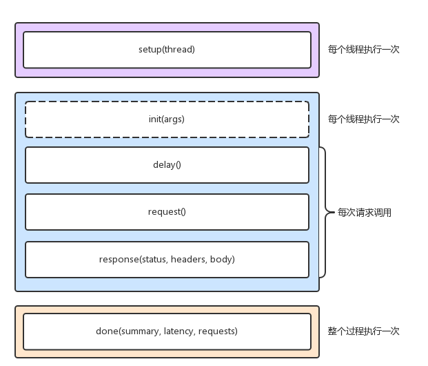
比如，你可以在 setup 阶段，为请求设置认证参数：
-- example script that demonstrates response handling and
-- retrieving an authentication token to set on all future
-- requests
token = nil
path = "/authenticate"
request = function()
return wrk.format("GET", path)
end
response = function(status, headers, body)
if not token and status == 200 then
token = headers["X-Token"]
path = "/resource"
wrk.headers["X-Token"] = token
end
end
在执行测试时，通过 -s 选项，执行脚本的路径：
$ wrk -c 1000 -t 2 -s auth.lua http://192.168.0.30/
域名与 DNS 解析
域名由一串用点分割开的字符组成，被用作互联网中的某一台或某一组计算机的名称，目的就是为了方便识别，互联网中提供各种服务的主机位置。
域名是全球唯一的，需要通过专门的域名注册商才可以申请注册。为了组织全球互联网中的众多计算机，域名同样用点来分开，形成一个分层的结构。而每个被点分割开的字符串，就构成了域名中的一个层级，并且位置越靠后，层级越高。
极客时间的网站 time.geekbang.org 为例，来理解域名的含义。这个字符串中，最后面的 org 是顶级域名，中间的 geekbang 是二级域名，而最左边的 time 则是三级域名。
点（.）是所有域名的根，也就是说所有域名都以点作为后缀，也可以理解为，在域名解析的过程中，所有域名都以点结束。
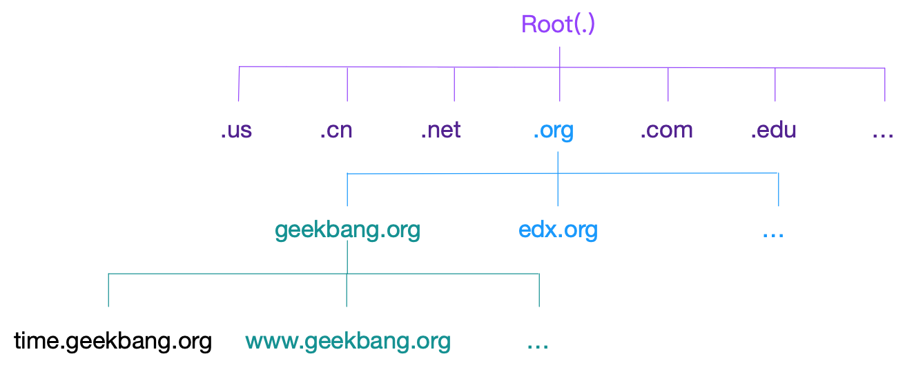
域名主要是为了方便让人记住，而 IP 地址是机器间的通信的真正机制。把域名转换为 IP 地址的服务，是域名解析服务（DNS），而对应的服务器就是域名服务器，网络协议则是 DNS 协议。
DNS 协议在 TCP/IP 栈中属于应用层，不过实际传输还是基于 UDP 或者 TCP 协议（UDP 居多） ，并且域名服务器一般监听在端口 53 上。
系统管理员在配置 Linux 系统的网络时，除了需要配置 IP 地址，还需要给它配置 DNS 服务器，这样它才可以通过域名来访问外部服务。可以执行下面的命令查看系统域名服务配置：
$ cat /etc/resolv.conf
nameserver 114.114.114.114
另外，DNS 服务通过资源记录的方式，来管理所有数据，它支持 A、CNAME、MX、NS、PTR 等多种类型的记录。比如：
- A 记录，用来把域名转换成
- IP 地址；CNAME 记录，用来创建别名；
- NS 记录，则表示该域名对应的域名服务器地址。
当我们访问某个网址时，就需要通过 DNS 的 A 记录，查询该域名对应的 IP 地址，然后再通过该 IP 来访问 Web 服务。以极客时间的网站 time.geekbang.org 为例，执行下面的 nslookup 命令，就可以查询到这个域名的 A 记录，可以看到，它的 IP 地址是 39.106.233.176：
$ nslookup time.geekbang.org
# 域名服务器及端口信息
Server: 114.114.114.114
Address: 114.114.114.114#53
# 非权威查询结果
Non-authoritative answer:
Name: time.geekbang.org
Address: 39.106.233.17
DNS 查询实际上是一个递归过程，可以通过 dig 命令来查看整个递归查询过程：
# +trace表示开启跟踪查询
# +nodnssec表示禁止DNS安全扩展
$ dig +trace +nodnssec time.geekbang.org
; <<>> DiG 9.11.3-1ubuntu1.3-Ubuntu <<>> +trace +nodnssec time.geekbang.org
;; global options: +cmd
. 322086 IN NS m.root-servers.net.
. 322086 IN NS a.root-servers.net.
. 322086 IN NS i.root-servers.net.
. 322086 IN NS d.root-servers.net.
. 322086 IN NS g.root-servers.net.
. 322086 IN NS l.root-servers.net.
. 322086 IN NS c.root-servers.net.
. 322086 IN NS b.root-servers.net.
. 322086 IN NS h.root-servers.net.
. 322086 IN NS e.root-servers.net.
. 322086 IN NS k.root-servers.net.
. 322086 IN NS j.root-servers.net.
. 322086 IN NS f.root-servers.net.
;; Received 239 bytes from 114.114.114.114#53(114.114.114.114) in 1340 ms
org. 172800 IN NS a0.org.afilias-nst.info.
org. 172800 IN NS a2.org.afilias-nst.info.
org. 172800 IN NS b0.org.afilias-nst.org.
org. 172800 IN NS b2.org.afilias-nst.org.
org. 172800 IN NS c0.org.afilias-nst.info.
org. 172800 IN NS d0.org.afilias-nst.org.
;; Received 448 bytes from 198.97.190.53#53(h.root-servers.net) in 708 ms
geekbang.org. 86400 IN NS dns9.hichina.com.
geekbang.org. 86400 IN NS dns10.hichina.com.
;; Received 96 bytes from 199.19.54.1#53(b0.org.afilias-nst.org) in 1833 ms
time.geekbang.org. 600 IN A 39.106.233.176
;; Received 62 bytes from 140.205.41.16#53(dns10.hichina.com) in 4 ms
dig trace 的输出，主要包括四部分。
- 第一部分，是从 114.114.114.114 查到的一些根域名服务器（.）的 NS 记录。
- 第二部分，是从 NS 记录结果中选一个（h.root-servers.net），并查询顶级域名 org. 的 NS 记录。
- 第三部分，是从 org. 的 NS 记录中选择一个（b0.org.afilias-nst.org），并查询二级域名 geekbang.org. 的 NS 服务器。
- 第四部分，就是从 geekbang.org. 的 NS 服务器（dns10.hichina.com）查询最终主机 time.geekbang.org. 的 A 记录。
DNS 缓存
要为系统开启 DNS 缓存，就需要你做额外的配置。最简单的方法，就是使用 dnsmasq。dnsmasq 是最常用的 DNS 缓存服务之一，还经常作为 DHCP 服务来使用。它的安装和配置都比较简单，性能也可以满足绝大多数应用程序对 DNS 缓存的需求。
centos 安装：
yum -y install dnsmasq
systemctl start dnsmasq
tcpdump 抓包
tcpdump 是最常用的一个网络分析工具。它基于 libpcap ，利用内核中的 AF_PACKET 套接字，抓取网络接口中传输的网络包；并提供了强大的过滤规则，帮助从大量的网络包中，挑出最想关注的信息。
tcpdump 展示了每个网络包的详细细节，这就要求，在使用前，你必须要对网络协议有基本了解。而要了解网络协议的详细设计和实现细节， RFC 当然是最权威的资料。不过，RFC 的内容，对初学者来说可能并不友好。如果对网络协议还不太了解，推荐学习《TCP/IP 详解》，特别是第一卷的 TCP/IP 协议族。这是每个程序员都要掌握的核心基础知识。再回到 tcpdump 工具本身，它的基本使用方法，还是比较简单的，也就是 tcpdump [选项] [过滤表达式]。
tcpdump 官方文档：https://www.tcpdump.org/manpages/tcpdump.1.html
fileter 手册：https://www.tcpdump.org/manpages/pcap-filter.7.html
tcpdump 提供了大量的选项以及过滤表达式，大多数情况下掌握常用的即可，常用的选项如下：

常用的过滤选项如下：

tcpdump 输出格式如下：
时间戳 协议 源地址.源端口 > 目的地址.目的端口 网络包详细信息
示例如下：
tcpdump -nn udp port 53 or host 35.190.27.188 -w ping.pcap
tcpdump -nn udp port 53 or host 35.190.27.188
DDOS 检测与防御
DDoS 的前身是 DoS（Denail of Service），即拒绝服务攻击，指利用大量的合理请求，来占用过多的目标资源，从而使目标服务无法响应正常请求。
DDoS（Distributed Denial of Service） 则是在 DoS 的基础上，采用了分布式架构，利用多台主机同时攻击目标主机。这样，即使目标服务部署了网络防御设备，面对大量网络请求时，还是无力应对。
从攻击的原理上来看，DDoS 可以分为下面几种类型。
- 第一种，耗尽带宽。无论是服务器还是路由器、交换机等网络设备，带宽都有固定的上限。带宽耗尽后，就会发生网络拥堵，从而无法传输其他正常的网络报文。
- 第二种，耗尽操作系统的资源。网络服务的正常运行，都需要一定的系统资源，像是 CPU、内存等物理资源，以及连接表等软件资源。一旦资源耗尽，系统就不能处理其他正常的网络连接。
- 第三种，消耗应用程序的运行资源。应用程序的运行，通常还需要跟其他的资源或系统交互。如果应用程序一直忙于处理无效请求，也会导致正常请求的处理变慢，甚至得不到响应。
当有一天你的网站响应变慢，并且通过 tcpdump 查到很多 SYN 包的就要小心了，可能是遭遇了 SYN 攻击，例如：
# -i eth0 只抓取eth0网卡，-n不解析协议名和主机名
# tcp port 80表示只抓取tcp协议并且端口号为80的网络帧
$ tcpdump -i eth0 -n tcp port 80
09:15:48.287047 IP 192.168.0.2.27095 > 192.168.0.30: Flags [S], seq 1288268370, win 512, length 0
09:15:48.287050 IP 192.168.0.2.27131 > 192.168.0.30: Flags [S], seq 2084255254, win 512, length 0
09:15:48.287052 IP 192.168.0.2.27116 > 192.168.0.30: Flags [S], seq 677393791, win 512, length 0
09:15:48.287055 IP 192.168.0.2.27141 > 192.168.0.30: Flags [S], seq 1276451587, win 512, length 0
09:15:48.287068 IP 192.168.0.2.27154 > 192.168.0.30: Flags [S], seq 1851495339, win 512, length 0
这时候再通过 sar 命令查看网络报收发情况：
$ sar -n DEV 1
08:55:49 IFACE rxpck/s txpck/s rxkB/s txkB/s rxcmp/s txcmp/s rxmcst/s %ifutil
08:55:50 docker0 0.00 0.00 0.00 0.00 0.00 0.00 0.00 0.00
08:55:50 eth0 22274.00 629.00 1174.64 37.78 0.00 0.00 0.00 0.02
08:55:50 lo 0.00 0.00 0.00 0.00 0.00 0.00 0.00 0.00
发现有大量的小包（PPS 很大，但是 BPS却很小），这个时候要更加坚信遭受到的是 SYN 洪水攻击，它的原理是：
- 客户端构造大量的 SYN 包，请求建立 TCP 连接；
- 服务器收到包后，会向源 IP 发送 SYN+ACK 报文，并等待三次握手的最后一次 ACK 报文，直到超时。
等待状态的 TCP 连接，通常也称为半开连接。由于连接表的大小有限，大量的半开连接就会导致连接表迅速占满，从而无法建立新的 TCP 连接。参考下面这张 TCP 状态图，你能看到，此时，服务器端的 TCP 连接，会处于 SYN_RECEIVED 状态：
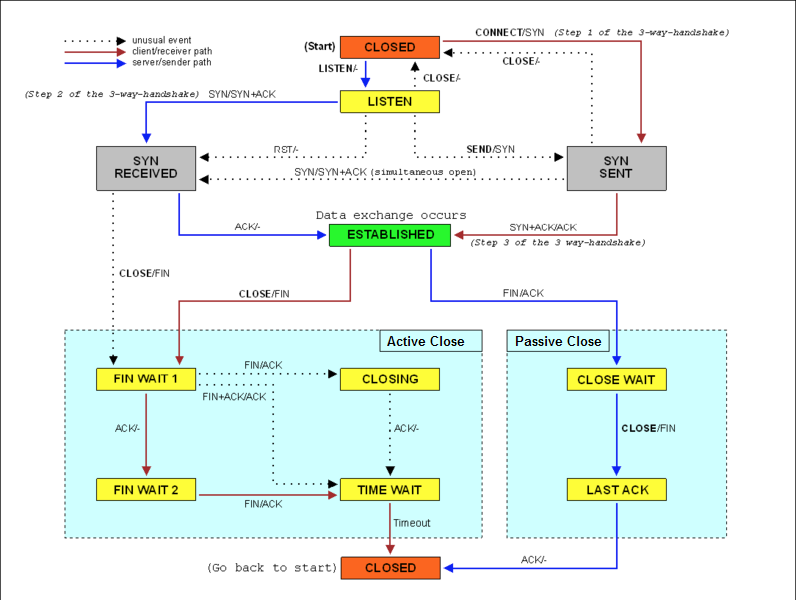
查看 TCP 半开连接的方法，关键在于 SYN_RECEIVED 状态的连接。我们可以使用 netstat ，来查看所有连接的状态，不过要注意，SYN_REVEIVED 的状态，通常被缩写为 SYN_RECV，例如执行下面的 netstat 命令：
# -n表示不解析名字，-p表示显示连接所属进程
$ netstat -n -p | grep SYN_REC
tcp 0 0 192.168.0.30:80 192.168.0.2:12503 SYN_RECV -
tcp 0 0 192.168.0.30:80 192.168.0.2:13502 SYN_RECV -
tcp 0 0 192.168.0.30:80 192.168.0.2:15256 SYN_RECV -
tcp 0 0 192.168.0.30:80 192.168.0.2:18117 SYN_RECV -
遇到这种工具可以通过 linux 的防火墙以及调整内核参数进行初步的防御，可以通过 iptables 进行限制：
# 将来源ip为 192.168.0.2 的报文直接丢掉
$ iptables -I INPUT -s 192.168.0.2 -p tcp -j REJECT
# 限制syn并发数为每秒1次
$ iptables -A INPUT -p tcp --syn -m limit --limit 1/s -j ACCEPT
# 限制单个IP在60秒新建立的连接数为10
$ iptables -I INPUT -p tcp --dport 80 --syn -m recent --name SYN_FLOOD --update --seconds 60 --hitcount 10 -j REJECT
半开状态的连接数增多可能组织你连接到server进行操作，可以通过 sysctl 命令调整系统内核参数：
$ sysctl -w net.ipv4.tcp_max_syn_backlog=1024
net.ipv4.tcp_max_syn_backlog = 1024
# 修改 SYN_RECV 状态的连接重试次数，默认是5
$ sysctl -w net.ipv4.tcp_synack_retries=1
net.ipv4.tcp_synack_retries = 1
# TCP SYN Cookies 也是一种专门防御 SYN Flood 攻击的方法，可以通过下面的方式开启
$ sysctl -w net.ipv4.tcp_syncookies=1
net.ipv4.tcp_syncookies = 1
sysctl 命令修改的配置都是临时的，重启后这些配置就会丢失。所以，为了保证配置持久化，你还应该把这些配置，写入 /etc/sysctl.conf 文件中。
$ cat /etc/sysctl.conf
net.ipv4.tcp_syncookies = 1
net.ipv4.tcp_synack_retries = 1
net.ipv4.tcp_max_syn_backlog = 1024
写入 /etc/sysctl.conf 的配置，需要执行 sysctl -p 命令后，才会动态生效
网络延迟测试
我们可以用 ping 来测试网络延迟，ping 基于 ICMP 协议，它通过计算 ICMP 回显响应报文与 ICMP 回显请求报文的时间差，来获得往返延时。这个过程并不需要特殊认证，常被很多网络攻击利用，比如端口扫描工具 nmap、组包工具 hping3 等等。
所以，为了避免这些问题，很多网络服务会把 ICMP 禁止掉，这也就导致我们无法用 ping ，来测试网络服务的可用性和往返延时
禁止ping有以下两种方法，第一种是修改内核参数： net.ipv4.icmp_echo_ignore_all，值为0表示允许，值为1表示禁止。
临时允许或禁止可通过：echo 0(1) >/proc/sys/net/ipv4/icmp_echo_ignore_all 来实现；
允许允许或禁止可通过修改 /etc/sysctl.conf 中的 net.ipv4.icmp_echo_ignore_all 配置选项来完成，最后通过 sysctl -p 命令来更新。
第二种实现通过防火墙进行限制，例如允许 ping 可以通过如下命令：
iptables -A INPUT -p icmp --icmp-type echo-request -j ACCEPT
iptables -A OUTPUT -p icmp --icmp-type echo-reply -j ACCEPT
禁止ping可通过如下设置：
iptables -A INPUT -p icmp --icmp-type 8 -s 0/0 -j DROP
当 ping 不能用的时候，可以用 traceroute 或 hping3 的 TCP 和 UDP 模式，来获取网络延迟。例如：
# -c表示发送3次请求，-S表示设置TCP SYN，-p表示端口号为80
$ hping3 -c 3 -S -p 80 baidu.com
HPING baidu.com (eth0 123.125.115.110): S set, 40 headers + 0 data bytes
len=46 ip=123.125.115.110 ttl=51 id=47908 sport=80 flags=SA seq=0 win=8192 rtt=20.9 ms
len=46 ip=123.125.115.110 ttl=51 id=6788 sport=80 flags=SA seq=1 win=8192 rtt=20.9 ms
len=46 ip=123.125.115.110 ttl=51 id=37699 sport=80 flags=SA seq=2 win=8192 rtt=20.9 ms
--- baidu.com hping statistic ---
3 packets transmitted, 3 packets received, 0% packet loss
round-trip min/avg/max = 20.9/20.9/20.9 ms
从 hping3 的结果中，你可以看到，往返延迟 RTT 为 20.9ms。或者使用 traceroute 命令：
root@iZ94lcu45k0Z:~# traceroute --tcp -p 80 -n baidu.com
traceroute to baidu.com (220.181.38.148), 30 hops max, 60 byte packets
1 * * *
2 * * *
3 11.219.127.37 6.947 ms 7.282 ms 11.219.127.33 7.558 ms
4 11.219.127.146 4.666 ms 4.774 ms *
5 10.255.70.121 0.456 ms 10.54.164.89 0.456 ms 10.54.164.97 0.482 ms
6 117.49.38.38 1.007 ms 45.112.222.174 1.105 ms 117.49.38.86 0.450 ms
7 117.49.38.18 1.003 ms 117.49.37.242 1.945 ms 42.120.242.217 1.902 ms
8 183.61.45.13 1.897 ms 183.2.184.137 1.654 ms 183.61.45.5 2.172 ms
9 183.2.182.117 12.446 ms 58.61.162.129 2.909 ms *
10 119.147.220.137 5.560 ms 119.147.222.93 4.830 ms 119.147.220.133 4.914 ms
11 202.97.22.153 43.237 ms 202.97.44.161 47.276 ms *
12 36.110.246.130 37.567 ms 36.110.247.66 38.779 ms 36.110.246.134 44.276 ms
13 * * 36.110.246.197 37.131 ms
14 220.181.17.146 38.029 ms 220.181.182.30 38.523 ms 220.181.182.170 38.955 ms
15 * * *
16 * * *
17 * * *
18 * 220.181.38.148 39.111 ms *
traceroute 会在路由的每一跳发送三个包，并在收到响应后，输出往返延时。如果无响应或者响应超时（默认 5s），就会输出一个星号。
快速确认和Nagle算法
https://time.geekbang.org/column/article/82833
NAT 性能优化
网络地址转换（Network Address Translation），缩写为 NAT，也是一个可能导致网络延迟的因素。NAT 技术可以重写 IP 数据包的源 IP 或者目的 IP，被普遍地用来解决公网 IP 地址短缺的问题。它的主要原理就是，网络中的多台主机，通过共享同一个公网 IP 地址，来访问外网资源。同时，由于 NAT 屏蔽了内网网络，自然也就为局域网中的机器提供了安全隔离。
NAT 的主要目的，是实现地址转换。根据实现方式的不同，NAT 可以分为三类：
- 静态 NAT，即内网 IP 与公网 IP 是一对一的永久映射关系；
- 动态 NAT，即内网 IP 从公网 IP 池中，动态选择一个进行映射；
- 网络地址端口转换 NAPT（Network Address and Port Translation），即把内网 IP 映射到公网 IP 的不同端口上，让多个内网 IP 可以共享同一个公网 IP 地址。
NAPT 是目前最流行的 NAT 类型，我们在 Linux 中配置的 NAT 也是这种类型。而根据转换方式的不同，可以把 NAPT 分为三类。
- 第一类是源地址转换 SNAT，即目的地址不变，只替换源 IP 或源端口。SNAT 主要用于，多个内网 IP 共享同一个公网 IP ，来访问外网资源的场景。
- 第二类是目的地址转换 DNAT，即源 IP 保持不变，只替换目的 IP 或者目的端口。DNAT 主要通过公网 IP 的不同端口号，来访问内网的多种服务，同时会隐藏后端服务器的真实 IP 地址。
- 第三类是双向地址转换，即同时使用 SNAT 和 DNAT。当接收到网络包时，执行 DNAT，把目的 IP 转换为内网 IP；而在发送网络包时，执行 SNAT，把源 IP 替换为外部 IP。
双向地址转换，其实就是外网 IP 与内网 IP 的一对一映射关系，所以常用在虚拟化环境中，为虚拟机分配浮动的公网 IP 地址。原理如下图：
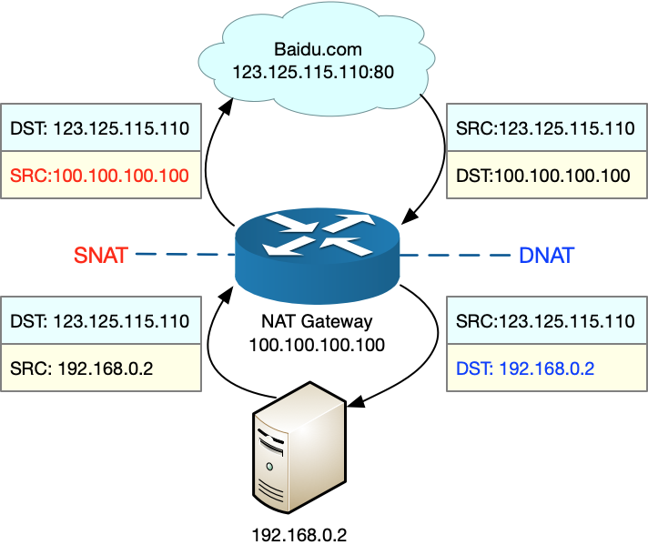
从图中，你可以发现：
- 当服务器访问 baidu.com 时，NAT 网关会把源地址，从服务器的内网 IP 192.168.0.2 替换成公网 IP 地址 100.100.100.100，然后才发送给 baidu.com；
- 当 baidu.com 发回响应包时，NAT 网关又会把目的地址，从公网 IP 地址 100.100.100.100 替换成服务器内网 IP 192.168.0.2，然后再发送给内网中的服务器。
网络性能优化
由于底层是其上方各层的基础，底层性能也就决定了高层性能。所以我们要清楚，底层性能指标，其实就是对应高层的极限性能。我们从下到上来理解这一点。
首先是网络接口层和网络层，它们主要负责网络包的封装、寻址、路由，以及发送和接收。每秒可处理的网络包数 PPS，就是它们最重要的性能指标（特别是在小包的情况下）。可以用内核自带的发包工具 pktgen ，来测试 PPS 的性能。
再向上到传输层的 TCP 和 UDP，它们主要负责网络传输。对它们而言，吞吐量（BPS）、连接数以及延迟，就是最重要的性能指标。可以用 iperf 或 netperf ，来测试传输层的性能。不过要注意，网络包的大小，会直接影响这些指标的值。所以，通常，你需要测试一系列不同大小网络包的性能。
最后，再往上到了应用层，最需要关注的是吞吐量（BPS）、每秒请求数以及延迟等指标。你可以用 wrk、ab 等工具，来测试应用程序的性能。不过，这里要注意的是，测试场景要尽量模拟生产环境，这样的测试才更有价值。比如，可以到生产环境中，录制实际的请求情况，再到测试中回放。总之，根据这些基准指标，再结合已经观察到的性能瓶颈，我们就可以明确性能优化的目标。
网络性能工具
从网络性能指标出发，更容易把性能工具同系统工作原理关联起来，对性能问题有宏观的认识和把握。这样，当想查看某个性能指标时，就能清楚知道，可以用哪些工具。总结如下图：
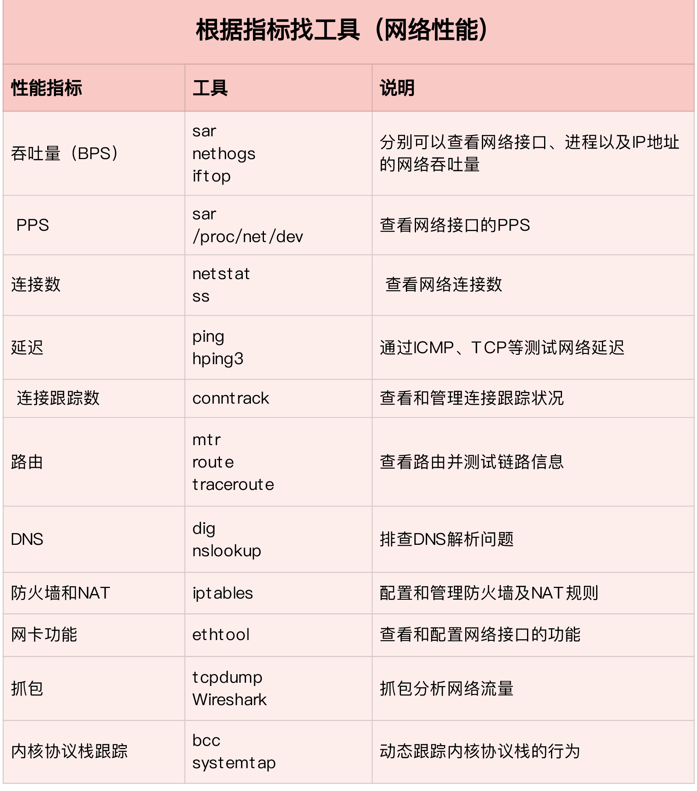
从性能工具出发，迅速找出想要观察的性能指标。特别是在工具有限的情况下，我们更要充分利用好手头的每一个工具，用少量工具也要尽力挖掘出大量信息。
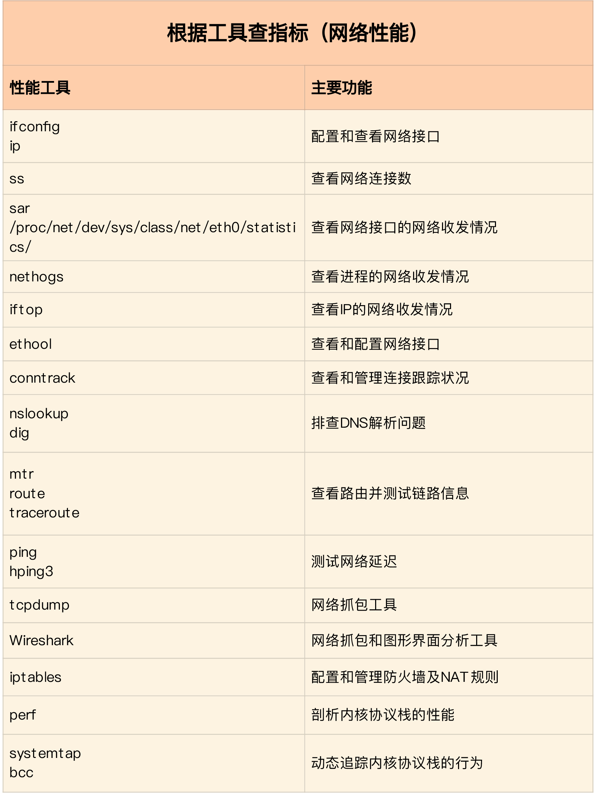
应用程序优化
从网络 I/O 的角度来说，主要有下面两种优化思路。
第一种是最常用的 I/O 多路复用技术 epoll，主要用来取代 select 和 poll。这其实是解决 C10K 问题的关键，也是目前很多网络应用默认使用的机制。
第二种是使用异步 I/O（Asynchronous I/O，AIO）。AIO 允许应用程序同时发起很多 I/O 操作，而不用等待这些操作完成。等到 I/O 完成后，系统会用事件通知的方式，告诉应用程序结果。不过，AIO 的使用比较复杂，你需要小心处理很多边缘情况。
而从进程的工作模型来说，也有两种不同的模型用来优化。
- 第一种，主进程 + 多个 worker 子进程。其中，主进程负责管理网络连接，而子进程负责实际的业务处理。这也是最常用的一种模型。
- 第二种，监听到相同端口的多进程模型。在这种模型下，所有进程都会监听相同接口，并且开启 SO_REUSEPORT 选项，由内核负责，把请求负载均衡到这些监听进程中去。
除了网络 I/O 和进程的工作模型外，应用层的网络协议优化，也是至关重要的一点，总结了常见的几种优化方法。
使用长连接取代短连接，可以显著降低 TCP 建立连接的成本。在每秒请求次数较多时，这样做的效果非常明显。
使用内存等方式，来缓存不常变化的数据，可以降低网络 I/O 次数，同时加快应用程序的响应速度。
使用 Protocol Buffer 等序列化的方式，压缩网络 I/O 的数据量，可以提高应用程序的吞吐。
使用 DNS 缓存、预取、HTTPDNS 等方式，减少 DNS 解析的延迟，也可以提升网络 I/O 的整体速度。
套接字优化
套接字可以屏蔽掉 Linux 内核中不同协议的差异，为应用程序提供统一的访问接口。每个套接字，都有一个读写缓冲区。读缓冲区，缓存了远端发过来的数据。如果读缓冲区已满，就不能再接收新的数据。写缓冲区，缓存了要发出去的数据。如果写缓冲区已满，应用程序的写操作就会被阻塞。所以，为了提高网络的吞吐量，通常需要调整这些缓冲区的大小。比如：
- 增大每个套接字的缓冲区大小 net.core.optmem_max；
- 增大套接字接收缓冲区大小 net.core.rmem_max 和发送缓冲区大小 net.core.wmem_max；
- 增大 TCP 接收缓冲区大小 net.ipv4.tcp_rmem 和发送缓冲区大小 net.ipv4.tcp_wmem。
套接字的内核选项，整理成了一个表格，方便在需要时参考：
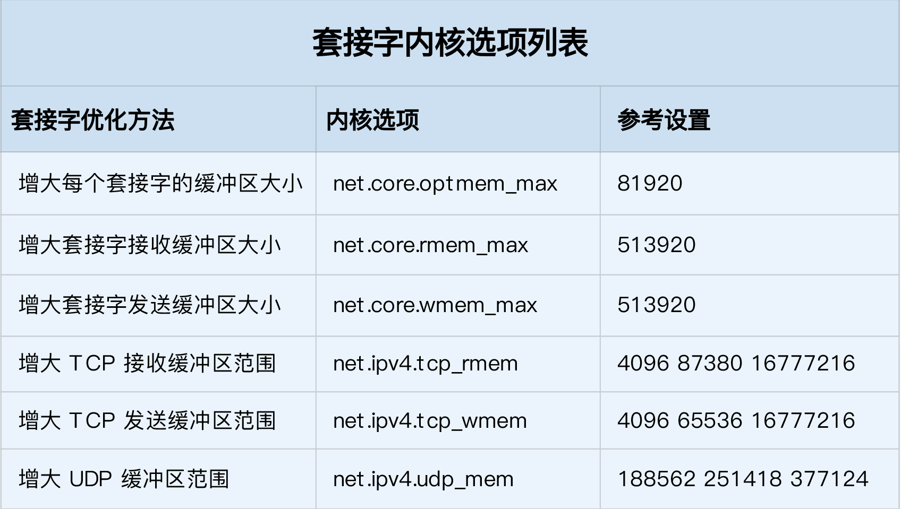
tcp_rmem 和 tcp_wmem 的三个数值分别是 min，default，max，系统会根据这些设置，自动调整 TCP 接收 / 发送缓冲区的大小。
udp_mem 的三个数值分别是 min，pressure，max，系统会根据这些设置，自动调整 UDP 发送缓冲区的大小。
表格中的数值只提供参考价值，具体应该设置多少，还需要根据实际的网络状况来确定。比如，发送缓冲区大小，理想数值是吞吐量 * 延迟，这样才可以达到最大网络利用率。
除此之外，套接字接口还提供了一些配置选项，用来修改网络连接的行为：
- 为 TCP 连接设置 TCP_NODELAY 后，就可以禁用 Nagle 算法；
- 为 TCP 连接开启 TCP_CORK 后，可以让小包聚合成大包后再发送（注意会阻塞小包的发送）；
- 使用 SO_SNDBUF 和 SO_RCVBUF ，可以分别调整套接字发送缓冲区和接收缓冲区的大小。
传输层优化
在请求数比较大的场景下，可能会看到大量处于 TIME_WAIT 状态的连接，它们会占用大量内存和端口资源。这时，我们可以优化与 TIME_WAIT 状态相关的内核选项，比如采取下面几种措施。
- 增大处于 TIME_WAIT 状态的连接数量 net.ipv4.tcp_max_tw_buckets ，并增大连接跟踪表的大小 net.netfilter.nf_conntrack_max。
减小 net.ipv4.tcp_fin_timeout 和 net.netfilter.nf_conntrack_tcp_timeout_time_wait ，让系统尽快释放它们所占用的资源。
开启端口复用 net.ipv4.tcp_tw_reuse。这样，被 TIME_WAIT 状态占用的端口，还能用到新建的连接中。
增大本地端口的范围 net.ipv4.ip_local_port_range 。这样就可以支持更多连接，提高整体的并发能力。
增加最大文件描述符的数量。你可以使用 fs.nr_open 和 fs.file-max ，分别增大进程和系统的最大文件描述符数；或在应用程序的 systemd 配置文件中，配置 LimitNOFILE ，设置应用程序的最大文件描述符数。
为了缓解 SYN FLOOD 等，利用 TCP 协议特点进行攻击而引发的性能问题，可以考虑优化与 SYN 状态相关的内核选项，比如采取下面几种措施。
增大 TCP 半连接的最大数量 net.ipv4.tcp_max_syn_backlog ，或者开启 TCP SYN Cookies net.ipv4.tcp_syncookies ，来绕开半连接数量限制的问题（注意，这两个选项不可同时使用）。
减少 SYN_RECV 状态的连接重传 SYN+ACK 包的次数 net.ipv4.tcp_synack_retries
在长连接的场景中，通常使用 Keepalive 来检测 TCP 连接的状态，以便对端连接断开后，可以自动回收。但是，系统默认的 Keepalive 探测间隔和重试次数，一般都无法满足应用程序的性能要求。所以，这时候需要优化与 Keepalive 相关的内核选项，比如：
- 缩短最后一次数据包到 Keepalive 探测包的间隔时间 net.ipv4.tcp_keepalive_time；
- 缩短发送 Keepalive 探测包的间隔时间 net.ipv4.tcp_keepalive_intvl；
- 减少 Keepalive 探测失败后，一直到通知应用程序前的重试次数 net.ipv4.tcp_keepalive_probes。
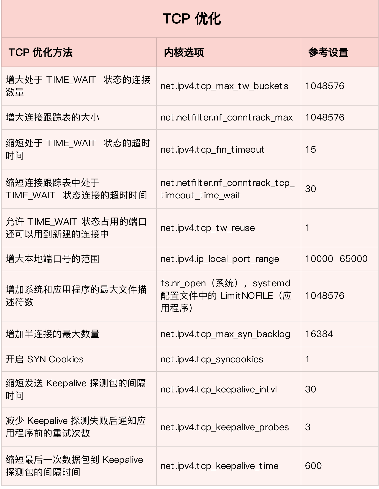
优化 TCP 性能时，你还要注意，如果同时使用不同优化方法，可能会产生冲突。比如，就像网络请求延迟的案例中我们曾经分析过的，服务器端开启 Nagle 算法，而客户端开启延迟确认机制，就很容易导致网络延迟增大。
UDP 的优化。UDP 提供了面向数据报的网络协议，它不需要网络连接，也不提供可靠性保障。所以，UDP 优化，相对于 TCP 来说，要简单得多。这里也总结了常见的几种优化方案。跟上篇套接字部分提到的一样，
- 增大套接字缓冲区大小以及 UDP 缓冲区范围；
- 跟前面 TCP 部分提到的一样，增大本地端口号的范围；
- 根据 MTU 大小，调整 UDP 数据包的大小，减少或者避免分片的发生
网络层优化
网络层，负责网络包的封装、寻址和路由，包括 IP、ICMP 等常见协议。在网络层，最主要的优化，其实就是对路由、 IP 分片以及 ICMP 等进行调优。
第一种，从路由和转发的角度出发，可以调整下面的内核选项。
在需要转发的服务器中，比如用作 NAT 网关的服务器或者使用 Docker 容器时，开启 IP 转发，即设置 net.ipv4.ip_forward = 1。
调整数据包的生存周期 TTL，比如设置 net.ipv4.ip_default_ttl = 64。注意，增大该值会降低系统性能。
开启数据包的反向地址校验，比如设置 net.ipv4.conf.eth0.rp_filter = 1。这样可以防止 IP 欺骗，并减少伪造 IP 带来的 DDoS 问题。
第二种，从分片的角度出发，最主要的是调整 MTU（Maximum Transmission Unit）的大小。
通常，MTU 的大小应该根据以太网的标准来设置。以太网标准规定，一个网络帧最大为 1518B，那么去掉以太网头部的 18B 后，剩余的 1500 就是以太网 MTU 的大小。在使用 VXLAN、GRE 等叠加网络技术时，要注意，网络叠加会使原来的网络包变大，导致 MTU 也需要调整。比如，就以 VXLAN 为例，它在原来报文的基础上，增加了 14B 的以太网头部、 8B 的 VXLAN 头部、8B 的 UDP 头部以及 20B 的 IP 头部。换句话说，每个包比原来增大了 50B。所以，我们就需要把交换机、路由器等的 MTU，增大到 1550， 或者把 VXLAN 封包前（比如虚拟化环境中的虚拟网卡）的 MTU 减小为 1450。另外，现在很多网络设备都支持巨帧，如果是这种环境，你还可以把 MTU 调大为 9000，以提高网络吞吐量。
第三种，从 ICMP 的角度出发，为了避免 ICMP 主机探测、ICMP Flood 等各种网络问题，可以通过内核选项，来限制 ICMP 的行为。
比如，你可以禁止 ICMP 协议，即设置 net.ipv4.icmp_echo_ignore_all = 1。这样，外部主机就无法通过 ICMP 来探测主机。
或者，你还可以禁止广播 ICMP，即设置 net.ipv4.icmp_echo_ignore_broadcasts = 1。
链路层优化
其他优化方式
第一种，使用 DPDK 技术，跳过内核协议栈，直接由用户态进程用轮询的方式，来处理网络请求。同时，再结合大页、CPU 绑定、内存对齐、流水线并发等多种机制，优化网络包的处理效率。
第二种，使用内核自带的 XDP 技术，在网络包进入内核协议栈前，就对其进行处理，这样也可以实现很好的性能。